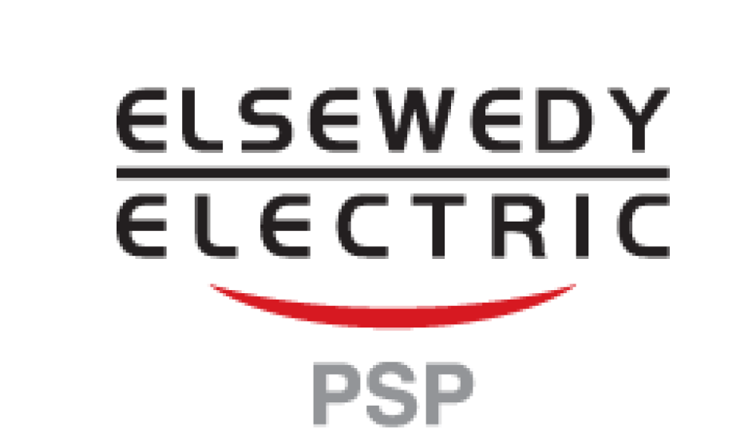
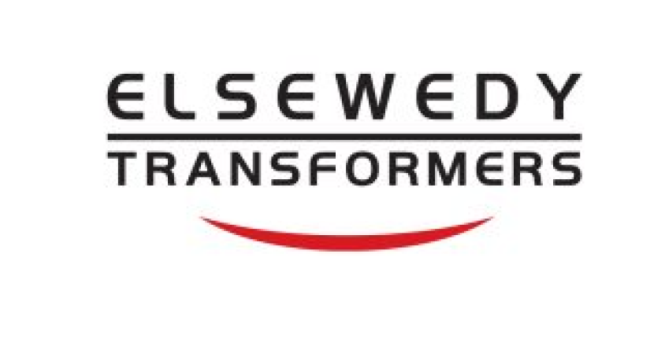
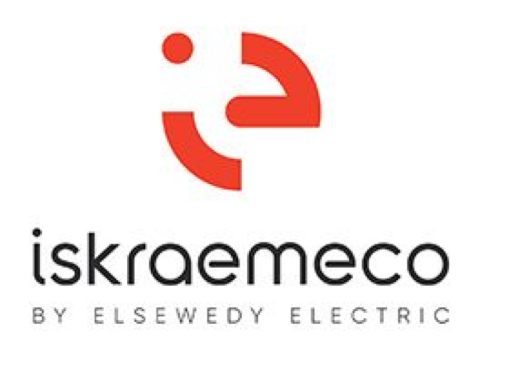

In programming department has two phase ORACLE and PEARSON BTEC DIPLOMA
Implementing modern commercial operations for Indian and decorative painting croquettes.
He carries out small technical operations in the jewelry industry.
Performs shaping operations on the metal surface.
It produces wire forming products in various ways in the field of jewelry.
The formation is applied according to the field of jewelry.
The new and moving part(connection) is implemented in the field of jewelry.
He carries out the technical operations of polishing, oxidation, and coloring in the field of jewelry.
It implements modern industrial processes in making and installing stone houses in the field of jewelry.
It carries out modern industrial processes for solid and hollow shapes, which are awarded as lost-wax casting.
It implements modern products that conform to specifications in the field of jewelry.
It carries out specialized technical operations in enamel, painting and printing in the field of jewelry.
The modern method is applied to cake and jewelry restoration.
He carries out the basic operations of installing lobes using a microscope in the field of jewelry.
Partner Factories
Electronics and Electricity Department
Electricity transmission and distribution stations
Learning Outcomes
Explain basic technical knowledge in the field of electricity transmission and distribution
Applies occupational safety and health rules related to the profession
Executes electrical extensions to the ground network
Installs the main and auxiliary electrical transformers for the station
Installs control and prevention cells and auxiliary missions at the power station
Installs GIS equipment at the power station
Installs AIS power station
Installs external equipment inside the power station
Implementing safety and security systems inside the power station
Extends high voltage cables and control cables
Operates various systems in power plants
Installs wind power plants
Installs solar power plants
Partner Factories

Energy components Department
Specialized power components in the Cabling Department
Learning Outcomes
In programming department has two phase ORACLE and person BTEC DIPLOMA
Performs electrical and mechanical engineering fundamentals.
He carries out industrial technical operations in workshops for cutting machines,
planers, lathes, measuring devices, tools, equipment and storage.
He carries out industrial technical operations in workshops for milling, assembly and
welding.
Iron core is made for dry transformers.
Manufactures coils for dry transformers.
Collects coils for dry transformers Manufactures the iron core of power transformers.
Manufactures coils for power transformers Collects power transformers.
Manufactures transformer oil.
Performs technical operations associated with the operation and maintenance of logic
control circuits
Partner Factories

Mechanics Department
Specialization in maintenance and repair mechanics
Learning Outcomes
In programming department has two phase ORACLE and person BTEC DIPLOMA
Apply occupational safety and health rules related to the profession
Executes the basic operations of the foundation workshops
Performs operations on production machines
Executes technical operations for mechanical maintenance
Performs technical operations associated with the operation and maintenance of circuits
Performs technical operations associated with the installation of cable connections and terminations
Performs basic technical operations associated with design and manufacturing
Partner Factories
Mechanics Installations Department
Specialized power components in the Cabling Department
Learning Outcomes
In programming department has two phase ORACLE and person BTEC DIPLOMA
Performs electrical and mechanical engineering fundamentals.
He carries out industrial technical operations in workshops for cutting machines,
planers, lathes, measuring devices, tools, equipment and storage.
He carries out industrial technical operations in workshops for milling, assembly and
welding.
Iron core is made for dry transformers.
Manufactures coils for dry transformers.
Collects coils for dry transformers Manufactures the iron core of power transformers.
Manufactures coils for power transformers Collects power transformers.
Manufactures transformer oil.
Performs technical operations associated with the operation and maintenance of logic
control circuits
Partner Factories
Logistics Department
Specialized power components in the Cabling Department
Learning Outcomes
In programming department has two phase ORACLE and person BTEC DIPLOMA
Performs electrical and mechanical engineering fundamentals.
He carries out industrial technical operations in workshops for cutting machines,
planers, lathes, measuring devices, tools, equipment and storage.
He carries out industrial technical operations in workshops for milling, assembly and
welding.
Iron core is made for dry transformers.
Manufactures coils for dry transformers.
Collects coils for dry transformers Manufactures the iron core of power transformers.
Manufactures coils for power transformers Collects power transformers.
Manufactures transformer oil.
Performs technical operations associated with the operation and maintenance of logic
control circuits
Partner Factories
Energy Department
Specialized power components in the Cabling Department
Learning Outcomes
In programming department has two phase ORACLE and person BTEC DIPLOMA
Performs electrical and mechanical engineering fundamentals.
He carries out industrial technical operations in workshops for cutting machines,
planers, lathes, measuring devices, tools, equipment and storage.
He carries out industrial technical operations in workshops for milling, assembly and
welding prepares conductors for drawing ,stranding ,insulation and electrical shielding.
Installs final cable sheaths.
Performs technical operations associated with the operation and maintenance of logic
control circuits.
Performs technical operations associated with the operation and maintenance of hydraulic
and electro-hydraulic circuits.
circuits Performs technical operations associated with the operation and maintenance of
pneumatic and electronic circuits.
Partner Factories
Iron and Steel Department
Iron and steel production
Learning Outcomes
Identify the administrative and organizational structure of the training institution
Follows industrial security, occupational safety and health, and environmental protection procedures
Identify the components of an iron and steel factory
Uses the fundamentals of mechanical engineering
Uses shaping and operating skills
Recognizes the stages of rebar production
Uses tools, equipment, and raw materials used in the iron and steel industry
Manufactures hydraulic and pneumatic systems
It uses different types of welding machines
It uses different cooling systems
Performs electrical and mechanical maintenance work for iron and steel factory workshops
The iron rolling line is used, including carrying out maintenance work on the rolling mills
Iron smelting furnaces are used
Follows the operations of the steel production line
It carries out loading and unloading operations for raw materials
Partner Factories
Chemical Industries Department
Operating plastic machines
Learning Outcomes
Carry out basic operations associated with the Plastics and PVC department
Applies occupational safety and health rules related to the profession
Performs basic technical operations associated with maintenance
Performs basic technical operations associated with the synthetic fibers department
He carries out the basic technical operations associated with the fiberglass production department
Performs basic technical operations associated with special vehicles
Performs basic technical operations associated with Master Patch
Partner Factories
Pharmaceutical Industry Department
Operating pharmaceutical machines
Learning Outcomes
Implements occupational safety and health rules related to the profession
It carries out the manufacturing of pharmaceutical tablets and capsules
Performs sterile liquid manufacturing operations
It carries out the manufacturing operations of ointments, creams and suppositories
It carries out the operations of manufacturing syrups, drops, and suspensions
Performs sterile powder filling operations
It carries out the manufacturing operations of sachets and effervescent tablets
Performs soft capsule manufacturing operations
It carries out the processes of manufacturing dry syrup, tablets and capsules of non-sterile antibiotics
Applies the basics of electrical and mechanical maintenance
Applies the basics of preparing laboratory tools and equipment
Partner Factories
Programming Department
Specialization in software and industrial applications
Learning Outcomes
In programming department has two phase ORACLE and PEARSON BTEC DIPLOMA
Helps in studying the application system diagram, by understanding the system
requirements and objectives, and analyzing the system components and functions.
Designs the algorithms necessary to run the system, by identifying the steps necessary
to complete each task, and identifying the relationships between these steps.
Uses the Java language to write programs, due to the many advantages of this language,
such as ease of learning, strong performance, and multiple uses.
Tests the database to ensure that it matches the system, by ensuring that the data
stored in the database is compatible with the system requirements.
Partner Factories

IT Information Technology Department
Specialization in Information Technology Systems and Networks (Sadat Branch)